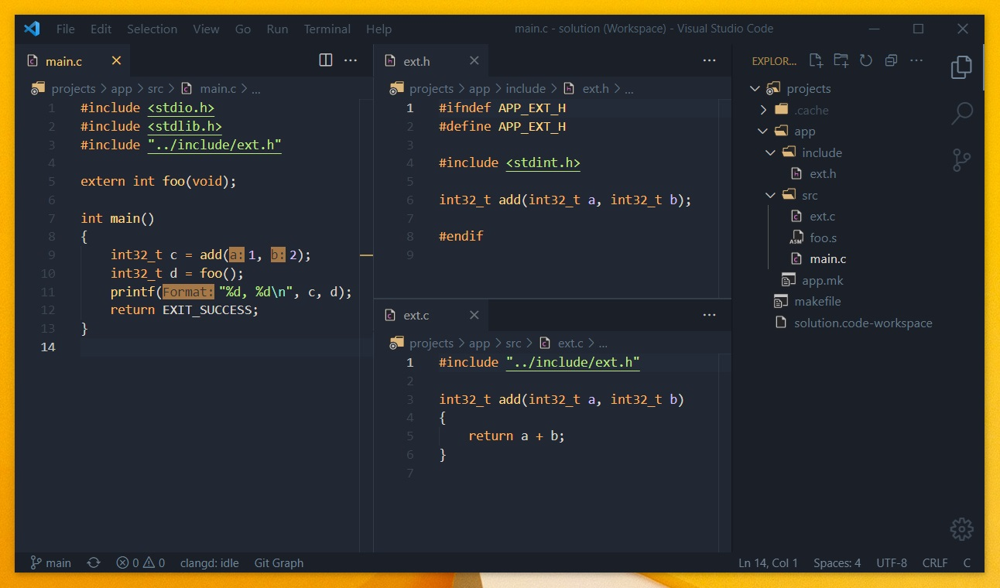

Programming: Making VSCode work
After struggling for a long time with trying to make visual studio code (vscode) work for my use case, I finally got a setup that I'm happy with. Not just in functionality, but also in look and feel.

My biggest gripe with vscode is how much it's trying to help out without asking first if I want it at all. Codelens, suggestions, minimap, colored brackets are to me all very distracting and/or take up screen real-estate that I can use for displaying more code in the same window. After disabling them, I noticed that I became more productive from not fighting the editor and being distracted by menus and suggestions poping up.
What I do really like about vscode is how much I can customize it; it's one of the best looking text editors with a bit of tweaking. Plugins for added functionality help out a lot too.
Here's the list of extensions that I use:
It's not a whole lot, but it gets the job done most of the time! And when it doesn't, I can always install another one or add task bindings so I can work around the specific issue.
Appendix A: User settings.json
{
// disable annoyances
"security.workspace.trust.enabled": false,
"extensions.ignoreRecommendations": true,
"git.enableSmartCommit": true,
"workbench.startupEditor": "none",
"explorer.confirmDelete": false,
"explorer.confirmDragAndDrop": false,
"git.confirmSync": false,
"editor.bracketPairColorization.enabled": false,
"editor.codeLens": false,
"editor.minimap.enabled": false,
// disable services
"telemetry.telemetryLevel": "off",
"update.mode": "none",
"workbench.enableExperiments": false,
"workbench.settings.enableNaturalLanguageSearch": false,
"update.showReleaseNotes": false,
"extensions.autoCheckUpdates": false,
// disable suggestions globally
"editor.hover.enabled": false,
"editor.parameterHints.enabled": false,
"editor.suggestOnTriggerCharacters": false,
"editor.inlineSuggest.enabled": false,
"editor.acceptSuggestionOnCommitCharacter": false,
"editor.acceptSuggestionOnEnter": "off",
"editor.quickSuggestionsDelay": 90000,
"editor.quickSuggestions": {
"other": "off",
"comments": "off",
"strings": "off"
},
// disable suggestions html
"html.format.enable": false,
"html.validate.scripts": false,
"html.suggest.html5": false,
// enable useful things
"editor.rulers": [ 79 ],
"git.autofetch": true,
// theming
"workbench.colorTheme": "Field Lights",
"workbench.iconTheme": "vscode-icon-theme",
"workbench.sideBar.location": "right",
"workbench.layoutControl.enabled": false
}